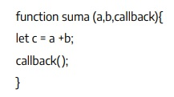

Tengo desarrollada la siguiente función en javascript
¿Que es el tercer parámetro recibido?
El tercer parámetro recibido en la función suma es una función de "callback". En JavaScript, un callback es una función que se pasa como argumento a otra función y se ejecuta después de que se complete la función principal.
¿En que casos es obligatorio desarrollar este tipo de funciones?
Los callbacks se utilizan para manejar la lógica que debe ejecutarse después de que una operación asincrónica haya finalizado, como una solicitud a un servidor, una lectura de archivos, o cualquier otra operación que no sea instantánea.
Realizar un llamado a la función de ejemplo.
function suma (a,b,callback){ let c = a+b callback(c) } function miCallback(c) { console.log(c) } suma(6,5,miCallback)